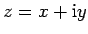
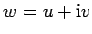
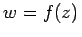

Inhalt Index DeskTop Bronstein

 Funktionentheorie Funktionen einer komplexen Veränderlichen Stetigkeit, Differenzierbarkeit
Funktionentheorie Funktionen einer komplexen Veränderlichen Stetigkeit, Differenzierbarkeit


Analog zu den reellen Funktionen kann man komplexen Werten  ebenfalls komplexe Werte  zuordnen, wobei u=u(x,y) und v=v(x,y) Funktionen zweier reeller Veränderlicher sind. Man schreibt . Durch die Funktion w = f(z) wird die komplexe z-Ebene in die komplexe w-Ebene abgebildet.
Die Begriffe Grenzwert, Stetigkeit und Ableitung einer Funktion w = f(z) einer komplexen Veränderlichen werden formal in Analogie zu den Funktionen einer reellen Veränderlichen definiert.